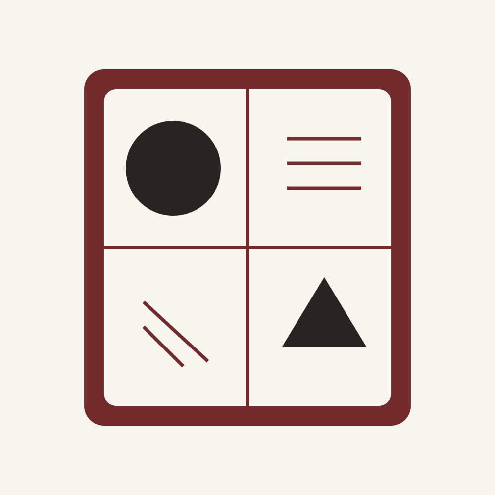

CAFE & LUNCH BOX / MATSUYAMA愛媛・松山INDEPENDENT DESIGN PROPOSAL
Cafe&Lunch Box 一の魔法愛媛・松山CAFE & EVERYDAY
ABOUT THE PLACE
松山の街で、 お昼の選択を。
松山市柳井町、シェアキッチンNABi内の「Cafe&Lunch Box 一の魔法」。紹介記事では、おにぎらずやランチセットをはじめ、スイーツとドリンクが案内されています。
公開情報に基づく紹介です。紹介の出典

A LITTLE DISCOVERY
お昼の楽しみを、選ぶ。
公開記事で紹介されている内容から、お店を知る小さな手がかりを。
-
おにぎらず
店舗紹介の記事で掲載されているメニューです。
-
ランチセット
記事掲載の案内です。現在のセット内容はお店にご確認ください。
-
スイーツ・ドリンク
紹介記事には、食事以外のメニューも掲載されています。
掲載内容は出典の掲載時点の情報です。現在の提供内容・価格・営業状況を保証するものではありません。
- 所在地
- 愛媛県松山市柳井町2-4-2 シェアキッチン NABi
- 営業時間
- 最新の営業日・営業時間は、お店の案内をご確認ください。
- 案内
- お店のInstagram
地図は店名・住所の検索リンクです。正確な入口や臨時休業などは、訪問前にご確認ください。